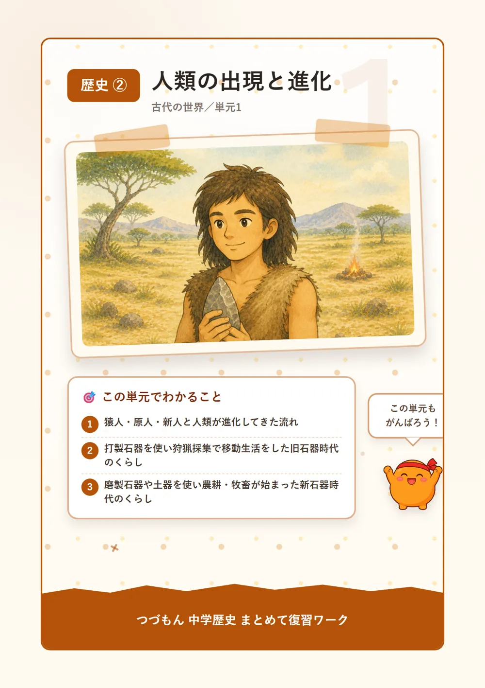
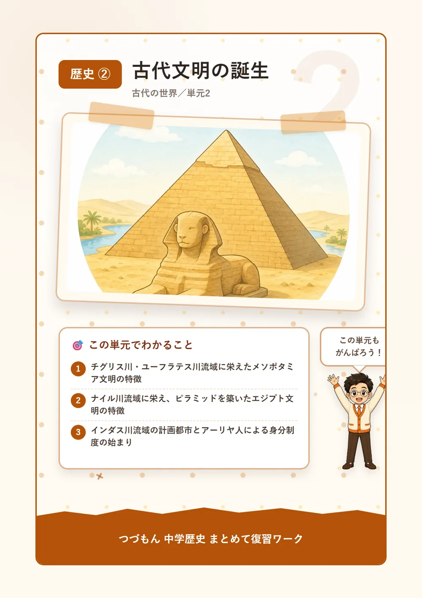
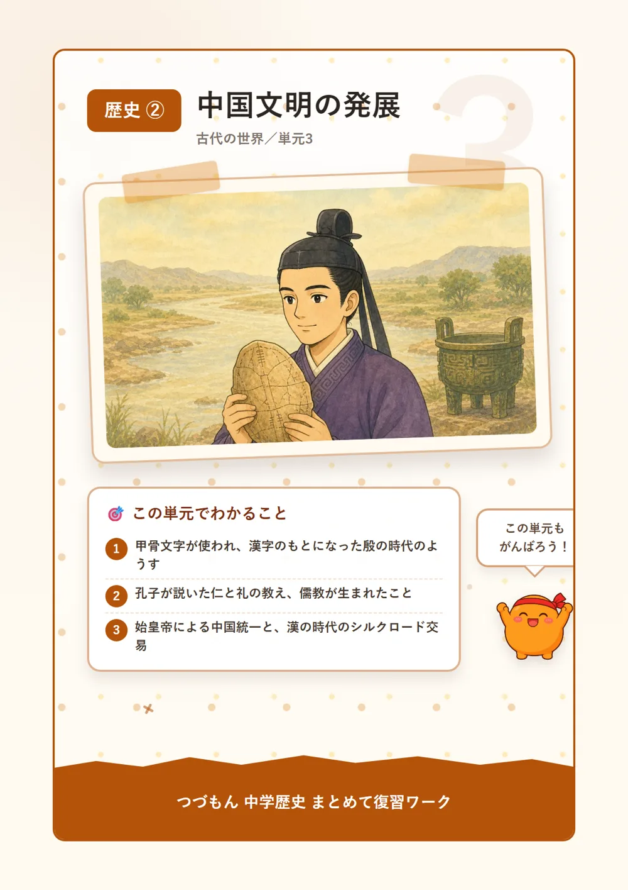
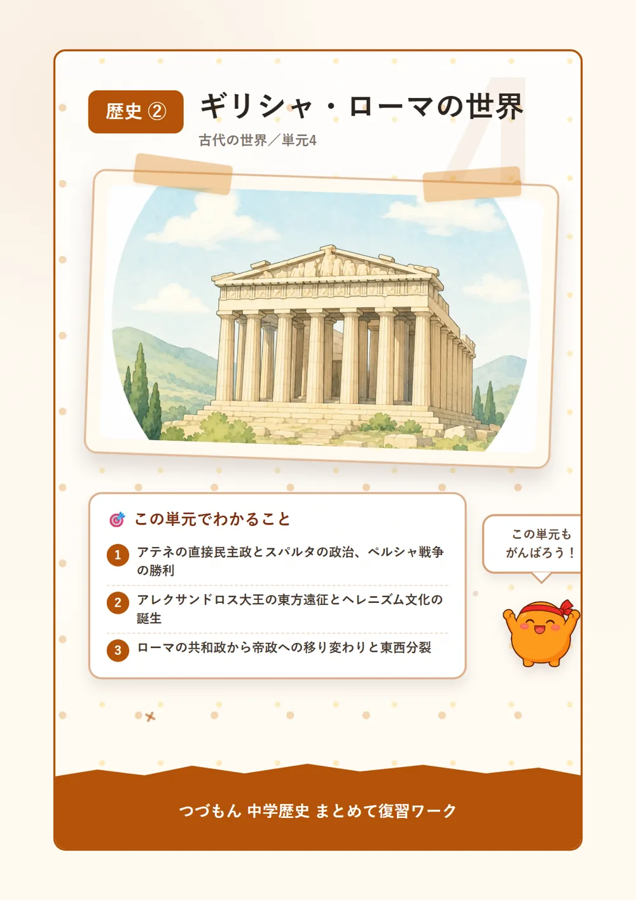
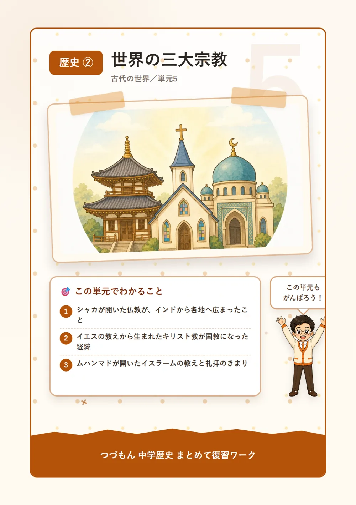

古代の世界
 いっしょに
いっしょに読もう！
人類の出現と進化

1猿人から新人への進化
約700万年前、アフリカで猿人が出現したんだ。直立二足歩行を始めたことで両手が自由になって、道具を作ったり使ったりできるようになったのが大きな特徴だよ。約240万年前になると原人が現れて、火を使い始めたんだ。火のおかげで食物を加熱したり暖を取ったりできるようになって、北京原人やジャワ原人がその代表例として知られているよ。そして約20万年前、今の人類の直接の祖先である新人(ホモ・サピエンス)がアフリカで出現したんだ。「知恵のある人」という意味を持つこの新人が、やがて世界中に広がっていったんだよ。
2旧石器時代のくらし
打製石器を使って、狩猟・採集で食料を得ながら移動生活を送った時代を旧石器時代というんだ。この時代は寒冷な時期が繰り返される氷河時代にあたっていて、海面が低下して大陸と島が陸続きになったことで、人類は新しい土地へと移動できたんだよ。人々は洞穴やテント状の住まいで暮らし、獲物を追って移動を続けたんだ。フランスのラスコーやスペインのアルタミラには、動物が描かれた見事な洞窟壁画が残されているよ。狩りの成功を祈って描いたと考えられているんだ。不思議だよね。
3新石器時代と農耕の始まり
約1万年前になると、表面をみがいて仕上げた磨製石器や、食物の煮炊き・貯蔵に使われた土器が使われ始めたんだ。この時代を新石器時代といって、農耕・牧畜が始まったことで人々は食料を安定して得られるようになったんだよ。これにより、移動をやめて村をつくる定住生活が広がって、人々が集まって暮らす集落が各地に生まれたんだ。集落はやがて指導者を生み出し、国のもとへとつながっていくんだね。

古代文明の誕生

1メソポタミア文明
チグリス川とユーフラテス川の流域にはメソポタミア文明が起こったんだ。「メソポタミア」とは「川の間の土地」という意味だよ。この地では、粘土板に刻むくさび形文字が発明されて、商業や行政の記録に使われたんだ。また月の満ち欠けを基準にした太陰暦や、時間や角度のもとになった60進法も生み出されたんだよ。紀元前18世紀ごろには、バビロニアの王がハンムラビ法典を定めたんだ。「目には目を、歯には歯を」という言葉で知られているよ。
2エジプト文明
ナイル川流域にはエジプト文明が発達したんだ。ナイル川は定期的に洪水を起こしていて、上流から運ばれる肥沃な土が農業を支えていたんだよ。エジプトの王であるファラオは自らの墓として巨大なピラミッドを築かせ、近くには人の顔とライオンの体を持つスフィンクスも建てたんだ。文字としては絵のような象形文字(ヒエログリフ)が使われて、洪水の時期を正確に知るために1年365日の太陽暦もつくられたんだよ。
3インダス文明とその後
インダス川流域にはインダス文明が栄えて、モヘンジョ=ダロやハラッパーといった、整然とした街路や排水設備を備えた計画都市が造られたんだ。しかし文明が衰えると、この地にはのちにアーリヤ人が侵入してきて、身分制度のもとがつくられていったんだよ。この身分制度は、のちのカースト制度へとつながっていくことになるんだね。
中国文明の発展

1殷・周と甲骨文字
黄河や長江の流域では中国文明が発生したんだ。中国最古の王朝とされる殷では、亀の甲羅や牛の骨に占いの結果を記す甲骨文字が使われていて、これがのちの漢字のもとになったんだよ。殷を滅ぼした周もやがて支配力を弱めていって、多くの国が争う春秋戦国時代に入っていったんだ。
2孔子と儒教の誕生
春秋戦国時代には、多くの思想家が活躍したんだ。孔子は人を思いやる心である「仁」と、社会の秩序を守る「礼」を説いて、その教えは弟子たちによって論語にまとめられたんだよ。この孔子の教えはのちに儒教と呼ばれる思想となって、東アジア各国に大きな影響を与えていったんだ。同じころ、老子は「あるがままに自然に従って生きる」ことを説いて、のちの道教のもととなったんだよ。
3始皇帝の統一と秦・漢帝国
紀元前221年、始皇帝は中国を初めて統一して、「皇帝」の称号を初めて用いたんだ。文字や度量衡を統一する一方、北方民族の侵入を防ぐために万里の長城を築き、思想を統一するために書物を焼いて学者を弾圧する焚書坑儒も行ったんだよ。しかし厳しい政治への反発から秦は短期間で滅んでしまい、劉邦が建てた漢では儒教が国の学問となって、西方と結ぶ交易路であるシルクロードを通じて絹などが運ばれたんだ。
ギリシャ・ローマの世界

1ポリスとアテネの民主政
古代ギリシャでは、都市を中心に独立した政治を行うポリスが数多く形成されたんだ。ポリスの中心には丘の上の城塞であるアクロポリスが置かれていて、アテネでは成年男性の市民が民会に直接参加する直接民主政が行われたんだよ。一方、軍事を重視したスパルタは、少数の支配者が治める政治を行っていて、アテネとは対照的な国家だったんだ。紀元前5世紀には、これらポリスの連合軍がペルシャ戦争で西アジアの大国ペルシャを撃退しているんだよ。すごいよね。
2アレクサンドロス大王とヘレニズム文化
紀元前4世紀、マケドニアのアレクサンドロス大王はエジプトからインド北西部にまで及ぶ東方遠征を行ったんだ。この遠征によってギリシャの文化と東方(オリエント)の文化が融合して、ヘレニズム文化と呼ばれる新しい文化が生まれたんだよ。「ヘレニズム」とは「ギリシャ風」という意味なんだ。
3ローマの共和政と帝政
一方ローマでは、王を置かず市民の代表が話し合う共和政がおよそ500年も続いたあと、皇帝が支配する帝政へと移っていったんだ。ローマ帝国は各地に水を運ぶ水道橋や、約5万人を収容する巨大な円形闘技場コロッセオを築いて、市民の権利を定めたローマ法を整えて広大な領土を治める基盤としたんだよ。395年に帝国は東西に分裂して、476年には西ローマ帝国が滅亡しているんだ。
世界の三大宗教

1仏教の成立
紀元前5世紀頃、インドではシャカが人々を苦しみから救う教えを説いて、仏教を開いたんだ。仏教の教えは経典と呼ばれる聖典にまとめられて、のちにシルクロードを通じて中国へ、さらに6世紀には日本にも伝わっていって、アジアを中心に広く信仰されるようになったんだよ。
2キリスト教の成立と広がり
1世紀のパレスチナでは、イエスが神の愛による救いを説いたんだ。イエスは十字架にかけられて処刑されてしまったけれど、その教えは弟子たちによってキリスト教としてまとめられて、聖書を聖典として信仰されるようになったんだよ。キリスト教は当初ローマ帝国から迫害を受けたけれど、信者が増え続けたことで、ついに4世紀末にはローマ帝国の国教として認められることになったんだ。
3イスラームの成立
7世紀、アラビア半島ではムハンマドが唯一神アッラーを信じるイスラームを開いたんだ。その教えは聖典であるクルアーン(コーラン)にまとめられていて、信者であるムスリムは、メッカにあるカーバ神殿の方角に向かって1日5回の礼拝を行うことが定められているんだよ。
4一神教とエルサレム
仏教・キリスト教・イスラームを合わせて三大宗教というんだ。このうちキリスト教とイスラームは、唯一の神だけを信じる一神教の考え方を持っていて、その先駆けとなったのが、これらより古くから伝わるユダヤ教なんだよ。ユダヤ教・キリスト教・イスラームの三つの宗教にとって、エルサレムは共通の聖地となっているんだ。不思議でしょ？